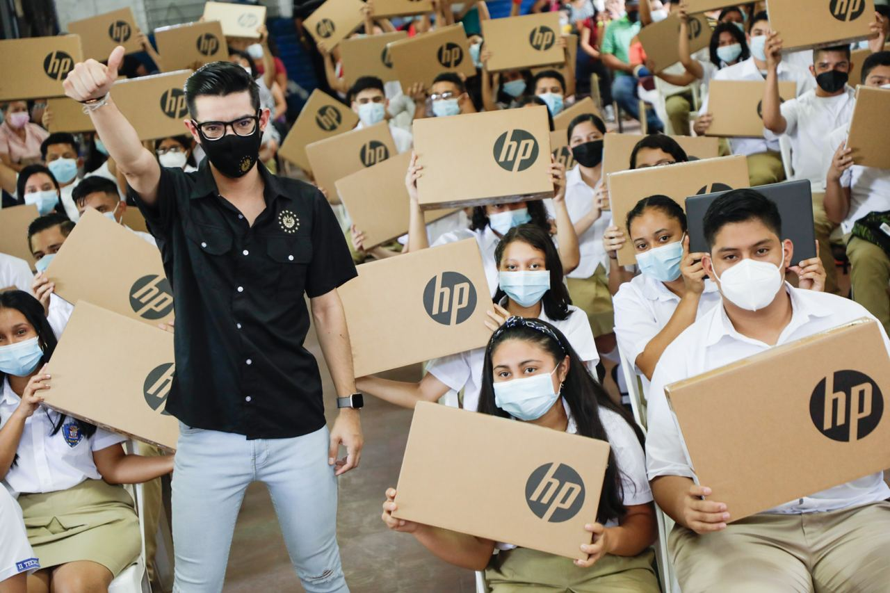
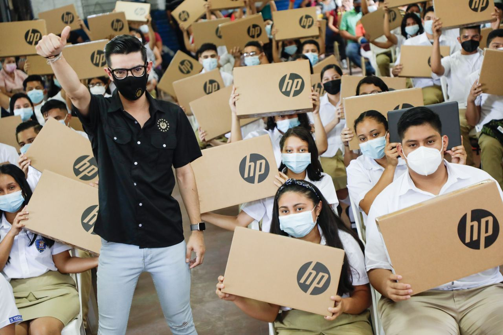

Nuestros Logros
 

En la era digital en la que vivimos, la tecnología de la información y las comunicaciones juegan un papel fundamental en casi todos los aspectos de nuestras vidas. Sin embargo, a pesar de los avances tecnológicos, hay muchas comunidades y personas que no tienen acceso a los recursos necesarios para aprovechar al máximo estas herramientas. Es en este contexto que la donación de computadoras se convierte en una forma poderosa de empoderar a aquellos que de otro modo estarían excluidos de los beneficios de la revolución digital. Al donar computadoras, no solo se brinda acceso a la tecnología, sino que también se abre un mundo de oportunidades educativas, laborales y de desarrollo personal.

Cuando donamos computadoras, estamos ofreciendo más que solo un dispositivo. Estamos entregando herramientas que pueden transformar vidas. Un simple acto de generosidad puede marcar la diferencia entre una persona que está atrapada en un ciclo de pobreza y otra que tiene la oportunidad de romper barreras y alcanzar sus metas. La donación de computadoras tiene un impacto directo en la educación. Muchas escuelas y organizaciones sin fines de lucro carecen de los recursos para adquirir equipos informáticos modernos. Al donar computadoras, se equipan aulas y bibliotecas con herramientas que facilitan el aprendizaje y estimulan la creatividad. Los estudiantes pueden acceder a información actualizada, realizar investigaciones en línea y desarrollar habilidades tecnológicas fundamentales para el mundo laboral del siglo XXI.

Además, la donación de computadoras también brinda oportunidades de empleo. Muchas personas en comunidades desfavorecidas carecen de acceso a oportunidades laborales significativas debido a la falta de habilidades tecnológicas. Al proporcionar computadoras, se les ofrece la posibilidad de aprender y practicar habilidades informáticas, mejorando así su empleabilidad y sus perspectivas económicas. La donación de computadoras también tiene un impacto en el desarrollo comunitario. Al brindar acceso a la tecnología, se fomenta la participación cívica y se fortalece la capacidad de la comunidad para comunicarse, colaborar y organizarse. Además, la tecnología puede facilitar la creación de pequeñas empresas y proyectos empresariales, lo que a su vez genera crecimiento económico local.